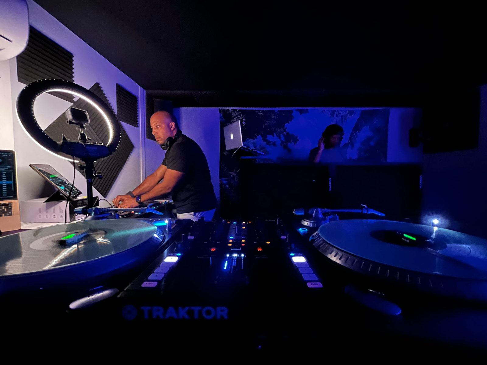

- Genres
- House, French touch, nu-disco, hip hop, afro house
- Format
- Sets en ligne, soirées, b2b
- Depuis
- Albi, Tarn
Bleu
Face A — Les mixs
Cliquer pour écouterFace B — Notes

01 — Musicien formé au conservatoire, aux platines depuis 2014, d'abord dans les clubs underground de Wuhan.
02 — Le mashup par stems pour faire se rencontrer une voix et une rythmique qui n'auraient jamais dû se croiser.
03 — Des influences larges : Kaytranada, Jungle, Kiefer, Justice, mais aussi le jazz et l'électro.
04 — Sur platines comme sur contrôleur, en solo ou en b2b avec ChillBrax.